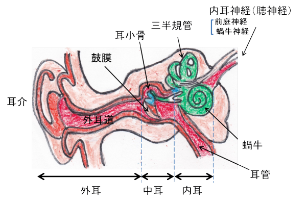
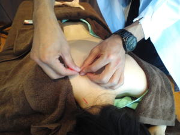
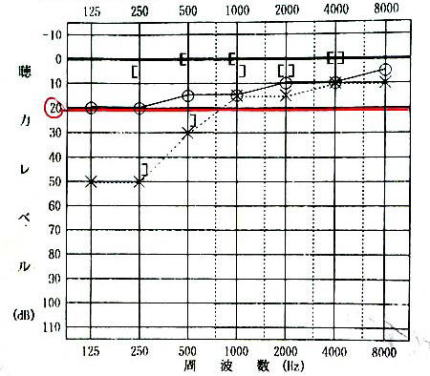
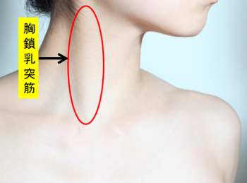
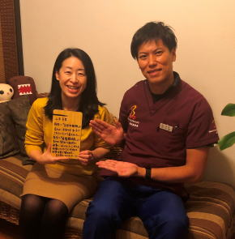

耳管開放症Patulous Eustachian tube（PET）
耳管開放症、メニエール病 、低音障害型感音難聴、突発性難聴専門院
【耳管開放症（PET）とは】
耳の中耳の部分に、中耳腔（鼓室）という空洞があります。
この中耳腔の下側に耳管という、約3.5ｃｍの管があります。この耳管は中耳腔から上咽頭（喉の上の部分）まで続く管になります。 耳管は普段は閉じていますが、気圧を感じた時、例えば、エレベータで上に行った時、新幹線でトンネルに入った時、ダイビングで水に潜った時など、中耳腔と外気に気圧差が出た時に耳管が開いて気圧調整をする働きがあります。
ポテトチップスの袋を持って山を登ると、袋がパンパンになるのを見た事があるかもしれません。中耳腔もまた空気が入って閉ざされている空間になるため、山に登ると空気が膨張しパンパンになります。
中耳腔からパンパンの空気を出してあげないと耳鳴りがしたり、頭が痛くなったりします。
そのため、つばを飲んだり、あくびをしたりして、一時的に耳管を広げてあげると、耳管を通じて上咽頭（喉の上の部分）に空気が排泄されるために内圧の調節がつきます。
つまり、耳管は内耳腔と外気との気圧の調節をする働きがあるということになります。
耳管は通常閉じています。なぜかというと、閉じていることによって鼓膜の振動が内耳へ安定して届けやすくなるからです。
また、上咽頭には雑菌が多いため、上咽頭から中耳に雑菌が入り込まないために普段は閉じた状態になっています。雑菌が中耳腔に入ると中耳炎になってしまいます。
耳管開放症はこの耳管が開きっぱなしになっている状態になります。
すると、鼻や口からの呼吸の際に中耳腔の中に空気が侵入してきます。
その結果、自分が話した時に自分の声が反響（自声強聴）する状態が見られます。
特に鼻から息を吐く時に大きくザーザー、ゴーゴーとした音が聞こえます。
この症状は患者の9 割以上にみられ、患者の多くが最も苦痛とする症状であると言われています。
また、呼吸のたびに空気の音がする（呼吸音聴取）などの症状が見られます。
この呼吸音聴取は他の疾患でみられないため耳管開放症の特徴的な症状になりますが、この症状を訴える方は比較的少ないと言われています。
しかし、耳管の開放が大きい（重症化）の場合ではしばしば見受けられる傾向があります。
また、耳閉塞感を訴える患者様も多くいます。
しかし、耳閉塞感は他の疾患でも見られるために耳閉塞感があったからといって耳管開放症とは断定できません。
この、自声強聴、呼吸音聴取、耳閉塞感の3つが耳管開放症の3徴候になりますが、1つでも当てはまると耳管開放症の疑いが出てきます。
よって、耳管開放症の概念としては一定時間以上連続して、あるいは周期的に開放することにより耳の不快な症状（自声強聴、呼吸音聴取、耳閉塞感）を訴えるものを耳管開放症という。
中でも自声強聴は、「自分の声の大きさがどれくらいの音量かわからない」「自分が話している時に相手の声が聞き取れない」などがあるため、人前で話す職業をしている人が、話している時に症状がでるとパニックになってしまう。
自声強聴でかなり辛い症状で、仕事を辞めたいと悩んだり、精神科に掛かる人も多いほど悩まれている症状です。
年齢や性別について、女性の場合、20~30代に多く、年齢が進むにつれて少なくなるが、男性の場合は60~70代が最も多かった。
発症頻度としては推定600万人で、20人に1人がなる割合の病気です。
歌手の中島美嘉さんもこの病気で苦しんだと言われています。
また、耳管が常に開放しているものは稀である。通常は突然症状が出て、しばらくすると治ってを繰り返すことが多い。非常に不快で自分の話し声の大きさがわかりにくくなるため、接客、歌手、教師など声を使う職業の人は支障がでる病気である。

【耳管開放症と間違われやすい疾患】
①突発性難聴（SD）
突発性難聴の場合は低音域以外の聴力も急に低下するのが特徴で、突如と発生するのでどの時に耳が聞こえなくなったと言えるのが特徴になります。
また、耳鳴りの音は高い高音域の『キーン』と言う音が多くなります。
耳管開放症の場合は呼吸をした時に低音域の『ゴーゴー』や『ザーザー』という音が聴こえることが多いです。
耳管開放症は低音域を中心とした伝音性難聴をきたすことが多い。
耳閉塞感は突発性難聴も、耳管開放症も両疾患とも見られる場合があります。
②急性低音性感音性難聴（ALHL）
ストレス性難聴と言われていて、耳の中の内耳が浮腫ことによって発症する病気です。
この疾患も低音域のみがやられる場合が多いが、耳管開放症は自声強調、耳閉塞感、呼吸音聴取が特徴となります。
急性低音性感音性難聴でも、自声強聴や耳閉塞感を示すことはあるので、診断を付ける場合は呼気時の鼓膜の動きがあるかなど確認が必要。また、仰向けに寝たり、首を曲げたりすると症状が改善するのも耳管開放症の特徴なので鑑別ができます。
②耳管狭窄症
症状は耳管開放症と同じなのですが、耳管開放症の方が症状が強く出ます。
特に自声強聴の場合『自分がどのくらいの声の大きさで話したらいいかわからない』という場合は耳管開放症を疑います。
風邪、花粉症、アレルギー性鼻炎、副鼻腔炎、蓄膿症、滲出性中耳炎などの炎症が耳管まで上っていき耳管に炎症を起こすために耳管が腫れあがり耳管が狭窄する病気です。
耳管が閉じたままになると、中耳の粘膜から少しずつ空気が吸収され、中耳腔が陰圧の状態になり、外気より気圧が低い状態になり、鼓膜が内側に凹んだ状態になるために鼓膜の動きが悪くなり、耳閉塞感を感じます。
慢性的に鼓膜が凹んだ状態を続けてしまうと、中耳に浸出液が貯留してしまう滲出性中耳炎や鼓膜の一部が中耳側に凹んで耳垢が溜まり真珠の様に見える真珠腫性中耳炎を起こす事があります。
耳管開放症と同じで、耳管狭窄症も耳閉塞感、自声強聴、難聴などの症状が出ます。
稀に上咽頭癌や悪性リンパ腫が原因で耳管狭窄症になることもあるので注意が必要です。
耳管開放症は患側を下にして横になると良くなることがあるが、耳管狭窄症は症状が悪化するもしくは変化がないことが多い。
耳管開放症は前屈や臥位、鼻すすりで楽になるのに対し、耳管狭窄症は鼻すすりで悪化し、鼻かみやバルサルバ法（鼻を摘まんで息を止めた状態でいきむこと）で軽快しやすい。
また、耳管開放症は治りにくいのに対して、耳管狭窄症は比較的治りやすいのも特徴です。
ただし、難治性の狭窄症も多いので、鍼灸施術をすることをオススメします。
耳管開放症の症状

【主症状】
① 自声強聴
話をすると自分の声が響いてしまう状態のこと。
『自分の声の大きさがどれくらいの音量なのかわからない。』
『自分が話している時に相手の声が聞こえない』というのも耳管開放症の特徴的です。
自声強聴は耳管閉鎖障害の最も重要かつ特徴的な症状である。
特に鼻から息を吐く時に大きく『ザーザー、ゴーゴー』とした音が聞こえます。
この症状は患者の9 割以上にみられ、患者の多くが最も苦痛とする症状であると言われています。人前で話す職業の人（アナウンサー、牧師、教師、司会者、弁護士、歌手など）は仕事にならないと言う。
そのため、人と話すことが出来なくなり仕事を辞めてしまったり、うつ病になる人もいるほど、自声強聴は辛いものなのである。
また、この症状は仰向けになったり、頭を前屈すると症状が楽になるという方が61％にみられたというデーターもある。これは横になったり、頭を前屈すると脳への血流量が増え、耳管の周りの血管が膨張して耳管を圧迫し閉じて症状が落ち着くと考えられています。
しかし、頭を前屈して症状が落ち着くものには上半規管裂隙症候群、脳脊髄圧減少症、外リンパ瘻などでも見られるので、一概に耳管開放症と判断するのは危険である。
② 耳閉感
人によって様々な表現があるが、『プールの後に水が抜けない感じ』『耳栓が入っている感じ』『高い所に行って気圧がかかって詰まった感じ』など患者様によって様々である。
耳閉感は頭を下げたり、寝転がったりすると楽になることが多いです。こちらも耳管への血流が増えるために耳管が閉じるためと言われています。
この耳閉塞の症状は様々な病気でみられます。
例えば、突発性難聴、急性低音性感音性難聴、メニエール病、上咽頭癌、耳垢、耳管狭窄症、
、耳管開放症、中耳炎、真珠腫性中耳炎、癒着性中耳炎、好酸球性中耳炎、滲出性中耳炎など。
これは外耳、中耳、内耳のどこに問題があっても症状を発症するためです。
③ 自己呼吸音聴取
呼吸のたびに呼吸の音が聞こえてしまう。症状です。
この呼吸音聴取は他の疾患でみられないため耳管開放症の特徴的な症状になりますが、この症状を訴える方は比較的少ないと言われています。
しかし、耳管の開放が大きい（重症化）の場合ではしばしば見受けられる傾向があります。
この症状は立っている時や運動時に症状がでやすく、仰向けなど寝転んでいると楽になったり消失したりする場合がある。
④難聴
低音のみ低下することが多い。
この症状は聞こえ方が日によって、あるいは時間帯によって変わることが多いのですが、聴力が落ちたまま聴力に変化がない方も多いのが特徴です。
しかし、『聞こえが悪い』ことを直接訴える患者様は少なく、『聞こえが悪いこと』を直接訴える場合は耳管狭窄症を考える。
⑤耳鳴り
耳の中で水が流れる音がする。心臓の音が耳鳴りとして聞こえるなどを訴える方がいる。
しかし、高音の耳鳴りを伴うことはないとされている。
軽いものだと、椅子に座って脚を開いた状態で頭を股も間に入れるようにして2～3分その状態でいるを1日数回を行うことで症状が軽快する場合がある。
⑥めまい
耳管開放症の場合、『グルグル回る』というめまいよりも、『フラフラする』『フワフワする』というめまいの事が多い。この症状はしばしば見受けられます。
【副症状】
① 鼻閉
朝起きた時だけ鼻が詰まるという症状を訴える方もいます。
② 鼻声
鼻づまり特有の変な声になってしまう場合がある。
鼻声を訴える患者様が実際に多く、耳管に対する施術をすると鼻声が治まることがある。
この観点から見ても、耳管が発生音声に何らかの影響を与えていることがわかる。
通常は、耳管は閉じているため、発生音声に影響を及ぼさない。
③ 自律神経失調（肩こり、不眠、頭痛、イライラ、疲労感などの不定愁訴）
肩こり、不眠、頭痛、イライラ、疲労感など様々な不定愁訴を訴えることがある。
④耳痛
呼吸によって、耳管を通ってきた空気により鼓膜が伸展して痛みがでるとされているが、三叉神経が過敏に反応して痛みが出ている場合もあるのではないかと言われている。
しかし、はっきりとした原因はわかっていないのが現状である。
また、この痛みは深部痛であり、炎症が起こって発症するものではない。
原因
耳管開放症は様々な要因が考えています。例えば、ダイエット(急な体重減少)、妊娠、ピルの服用、過労、血液循環障害、加齢、睡眠不足、過度な運動、中耳炎、手術、薬の副作用、透析、頭部への外傷、放射線照射、扁桃腺摘出の既往、口蓋裂、顎関節症、三叉神経切断、自律神経失調症など色々なことが原因で発症すると考えられています。
その中でも最も関係が深いと言われいるのがストレスです。
運動や過労などの肉体的ストレス、人間関係などの精神的ストレスが大きく関係している病気だと言われています。そのため、神経質など普段から気にしやすいタイプの方に多い特徴があります。しかし、原因が不明の場合も多くはっきりとした原因はわかっていません。
滲出性中耳炎などの中耳疾患の既往、悪性腫瘍による体重減少、低血圧が頻度の高い合併症とされています。
また、生まれつき耳管が広がっている人や鼓膜が薄い人に発症しやすい病気です。
耳管開放症で3ｋｇ以上体重が落ちた人が4割にも上るというデータがあります。
体重減少は耳管開放症の背景因子として最も頻度が高いといわれている。
そのため、病院では太りなさいと言われるが太っても良くならない方がほとんどです。
女性の場合は体重減少の理由が、ダイエットが多いのに対し、男性は過労、悪性腫瘍、糖尿病などが原因であることが多い。
これは、痩せてしまう程のストレスがかかっているために発症するものと当院では考えるので、ストレスを取り除かないと治りません。
体重減少の次に多い理由が妊娠、ピルの服用です。
妊娠やピルとの関係もはっきりわかっていないのですが、体重減少とは明らかに違う理由になります。しかし、何かしらエストロゲン値の上昇が耳管機能に影響を与えていると考えられています。妊娠すると骨盤の筋肉が緩み骨盤が広がる準備をします。そのため、耳管の周りの筋肉もその影響で緩んでしまって耳管が広がってしまうのではないかと言われています。
エストロゲンの数値が高まる妊婦にも発症し、妊娠5～6ヵ月あたりから症状が出てきます。
また、耳管開放症は難病指定疾患でもあるため、多くの患者様が病院に行っても治らないと、なげかれているのが実情です。
【聴力レベル別の日常音】
軽度難聴
30～50 dB：小声は聞こえないが普通の大きさの会話は聞こえる。
中等度難聴
50～70 dB：大声だと聞こえる。
高度難聴
70～90 dB：耳元で大声を出してもらうと聞こえる。
【オージオグラムの見方】

※正常値は20~30dB以内とされています。
耳管開放症は聴力に問題がでないことも多い病気です。しかし、聴力に問題が出る場合は上記の図のように低音域のみがやられることが多いです。
・〇が右耳になります。（全国統一）
・×が左耳になります。（全国統一）
・骨導聴力：頭蓋骨の振動が直接内耳に伝わる。
・気導聴力：音が空気を伝わり耳介から外耳を通って鼓膜に届き、鼓膜の奥にある中耳の耳小骨を振動させ、耳小骨の振動が内耳に伝わる。
※病院によってはオージオグラムのデーターを患者さんに渡してくれない病院もあります。
その場合は、患者様からオージオグラムの控えを欲しい、もしくは携帯で写真を撮るなどして当院に来る際にお持ちください。
オージオグラムは最初の状態を把握するのに大変重要なデーターになりますので必ず病院で聴力検査を行った場合は控えをもらうようにしてください。
【難聴の種類】
難聴には３種類あります。感音性難聴、伝音性難聴、混合性難聴です。
【感音性難聴】
気導聴力と骨導聴力が両方20dBより悪く、同じレベルであれば、感音性難聴と診断されます。
聴力が低下した場合に最も考える疾患の突発性難聴は感音性難聴に含まれます。
他にもメニエール病、騒音性難聴など、内耳に原因がある疾患でよく見られます。
【伝音性難聴】
骨導聴力が20dB以内の正常範囲なのに気導聴力が20dBより悪いと伝音性難聴となります。
これは中耳炎など、中耳の疾患でよく見られます。
耳管開放症は耳管が中耳に存在するために伝音性難聴に含まれます。
【混合性難聴】
気導聴力と骨導聴力が両方20dBより悪くかつ気導聴力が骨導聴力より悪いと混合性難聴となります。老年性難聴は多くの場合、混合性難聴と言われます。
上記のオージオグラムは、オージオメーターという聴力検査機によって測定されます。
施術方法について
【病院での施術法】
薬物療法が主体となります。しかし、重症例には長期的な効果が得られない。
その他の施術法としては、耳管内薬剤塗布、耳管内噴霧、耳管内ジアテルミー、鼓膜換気チューブ留置術、耳管結紮、生理食塩水点鼻療法などを行っているが治療効果の結果は良くない。
最近では、人口耳管や耳管内粘膜への自家脂肪収入法なども行われているが思わしい結果には至っていないのが現状で、病院で治らないので、鍼灸でどうにかなるのではないか、とのことで当院へは多くの患者様が来院されております。
【鍼灸での施術方法】
当院の鍼灸施術では、『耳の血流を直接刺激する当院のみが行うオリジナルの施術方法』となるため西洋医学とは全く違った観点からのアプローチとなります。
どこの病院でも、鍼灸院でも行っていない全く新しい考え方による施術法で耳の血流を良くするのに最適な方法と考えております。
鍼灸施術は芸術的観点があるため誰に鍼灸をしてもらうかが重要です。私は鍼灸学校での教員ををしていて1学年に生徒が120人いても元々持った素質がある学生は1年で6人ほどしかしません。それを患者様が探すのは至難の業です。また、スタッフが多い鍼灸院でも誰に受けるかが大変重要になります。
その点、当院では鍼灸の高い技術に合わせて様々な最新技術による施術を行います。
この最新技術は、耳の血流をアップさせ、耳の中の浮腫みを取り除き、内耳の中を揉み、聴神経を活発にし、耳の中にある筋肉を鍛え、尚且つ全身の血流も良くする施術方法になります。
『病院でお医者さんから治らない』と言われてもまだ諦めないでください。
当院に来院されている多くの患者様も同様に、『もう治らない』とお医者さんに言われている方が多くいらっしゃいます。
また、妊娠中の方、高血圧、胃潰瘍、糖尿病、ステロイドが苦手な方などのステロイドを使用する事ができない患者様にとっては鍼灸が第一選択になります。
高血圧、胃潰瘍、糖尿病がある人は症状が悪化することがあるため薬の服用にも注意が必要です。
耳管開放症でやってはいけないこと
①鼻をすする
鼻をすすることにより耳管を閉鎖させることができるため、症状が軽減する。
鼻咽腔～中耳腔を陰圧化し、耳管が閉鎖するために自声強聴などの不快症状が取り除かれる。
そのため、鼻すすりが無意識のうちに繰り返してしまう。
しかし、中耳腔が陰圧になるため、鼓膜が陥凹してしまいます。
鼓膜が陥凹すると、中耳疾患を引き起こすことがわかっています。
特に小児性中耳炎、滲出性中耳炎、癒着性中耳炎、反復性中耳炎、真珠腫性中耳炎などである。
上記の疾患に罹った方の60％は鼻をすする癖があることがわかっています。
鼻をすする人は、鼻をすすらない人と比べると、鼓膜の陥凹率が9.92倍も高くなるという研究データがある。
②喫煙
タバコは血管を収縮させる働きあるため脳、皮膚、耳の血流を停滞させてしまいます。
また、タバコは脳への酸素供給をブロックしてしまうため耳管開放症の患者様は絶対的禁忌となります。 これは電子タバコも同様になります。 耳が治るまではお止めください。
③ お酒
お酒は体を浮腫ませてしまうため、内耳を浮腫ませてしまうためおススメできません。
たとえ、少しだったとしても治るまでは禁止です。
しかし、どうしても接待などで断れない状況の場合は、ウーロンハイを注文してください。
注文したらすぐにトイレに行き、その時に店員さんに耳の状態の事を話し『私がウーロンハイと言ったら常温のウーロン茶を持ってきて下さい』と伝えてください。
そうすると、会食している相手にも気を使わせなくてすむでしょう。
④体を冷やすこと
体温より低い食べ物を食べ続けると毛細血管の血流が悪化し、その結果、免疫力が低下します。 そのため、36℃以下の食事は控えてください。
サラダ、お寿司、フルーツ、ヨーグルトなどすべて耳が良くなるまでお控えください。
ただし、36℃以上に温めて食べるのなら食べても構いません。
⑤睡眠
耳管開放症の患者様のほとんどがストレス、過労、睡眠不足などを訴えます。
そのため、22時~26時までの間に必ず寝るようにしてください。
その間をゴールデンタイムと言って、人間の体を修復するのに働く『成長ホルモン』の分泌が高まります。 22時~26時以外の時間で寝ても成長ホルモンによる体の修復は行われにくくなります。
耳管開放症では、成長ホルモン剤の投与で劇的に回復したというデータもあるので必ず早く寝てください。
⑥音楽がうるさいところに行かない
耳の神経がやられている環境でも尚且つ、耳に刺激を与えてしまうと症状が治らなくなってしまいます。音楽も副交感神経を優位にするような、ゆったりとした音楽をイヤホン以外で聞くのなら問題ありません。
しかし、寝る際は無音にして寝てください。パートナーのいびきがあるようでしたら部屋を変えてるもしくは耳栓をしてください。
また、活動時も耳栓やノイズキャンセリング付きのイヤホンで悪い方の耳は無音の状態にしてあげてください。
⑦水泳
水泳は耳に水圧がかかるためおススメできません。
しかし、症状が治れば全く問題ありません。
⑧鼻を強くかむ
鼻を強くかむと鼓膜に負担をかけて中耳炎になることもあるので、なるべく優しく行ってください。
⑨カフェイン
カフェインは血管を収縮させてしまい耳の血流を停滞させてしまいます。
また、カフェインは交感神経を刺激する作用があります。 そのため、カフェインを寝る前に飲むと眠れなくなるのです。
交感神経が働くと脳や内耳の血管が収縮するため耳に良くありません。
⑩気圧が変わるところ（山など、ダイビング）
山に登ったりすると耳が詰まったり、耳鳴りがしたりすることがあると思います。 ダイビングや水泳も水圧がかかり耳抜きをしたりするので耳の負担が大きくなるのでおススメできません。
⑪ 新幹線
現在、全国から来院される患者様も多くいらっしゃいます。
そのような場合はなるべくスピードの遅い新幹線を選んでください。
また、トンネルを超える時などにガムを噛むようにすると耳管が開くために耳閉塞感（耳詰まり）が出にくくなります。
⑫飛行機
できることなら乗らないでください。
しかし、どうして飛行機でないと当院に来院できないという場合は離陸時と着陸時にガムを噛んでいてください。
※治癒後3カ月間は上記内容に注意して生活を行ってください。
耳管解消症の方のセルフケア方法
耳と首の筋肉の緊張をほぐして耳の血流を改善する方法と、自律神経のバランスを調整する方法をご紹介します。
自宅で簡単にできるセルフケアになります。
【耳ひっぱり運動】
耳を、両手で両耳を10回ずつ上、下、後ろに手でひっぱっていきます。
次に、耳介を手でひっぱりながらグルグル回します。前回りに10回、後ろ回りに10回ずつです。
耳を極度に強くひっぱり過ぎないように注意しましょう。
痛くなく、気持ち良い程度の強さで行っていきましょう。これにより内耳への血流をが改善してきます。
【首もみほぐし】
首の筋肉の緊張は、内耳への血流を滞らせてしまいます。
首にある筋肉、特に胸鎖乳突筋の緊張をほぐしてあげる事で、内耳の血流を改善します。
胸鎖乳突筋は、耳たぶのすぐ後ろにある骨のでっぱり(側頭骨の乳様突起)から始まり、鎖骨の内端までつながる筋です。両手を当てて首を左右に回すと簡単に触れる事ができます。
この胸鎖乳突筋を指で優しくつまむようにして、揉みほぐしていきましょう。
また、肩こりのある方は、肩をもみほぐす事でさらに首から内耳への血流が改善されます。
以上の耳と首の血流改善のためのセルフケアを、1日3回以上、気づいた時に行っていきましょう。

【耳管開放症に効く呼吸法】
ストレスは、耳管開放症のきっかけになる事が多く報告されています。
実際、当院にいらっしゃる多くの患者様が、耳管開放症の始まった時期にストレスやプレッシャーを感じていたと言っています。
心身ともにストレスがかかると、自律神経の中の交感神経が作動し副交感神経とのバランスが崩れて様々な不調が体に現れます。
よく、自律神経失調症と聞くと思いますが、この状態は交感神経が優位になり、しっかりと副交感神経が働かない状態のことを言います。
この自律神経が乱れた状態、つまり、副交感神経を優位にさせるためには腹式呼吸が効果的です。
やり方は、簡単なので自宅でも気軽に行えます。
① おヘソのあたりに両手を当て背筋を伸ばし座る
② 3秒かけて鼻から息を吸う（この時に胸とお腹を膨らませるのがポイント）
③ ②の状態のまま、3秒止める
④ 6秒かけて鼻からゆっくり息を吐く（この時お腹を限界まで凹ませる）
⑤ これを1日10回行う
慣れるまではその日の体調に合わせて、無理のない範囲で行いましょう。
これをたった、10日間行うだけで副交感神経優位の体になることができます。
【寝る前のリラックスする音楽】
寝る前に5分間好きな音楽を聴き、上記の呼吸法を行ってリラックスして眠りにつく
好きな音楽といっても激しい音楽ではなく気持ちが落ち着く曲を聴いて下さい。
クラシックなどがおススメです。
患者様で寝ている間、ずっと聞いていたという患者様がいらっしゃいますが、寝つきまでの間のみにしておいてください。
寝ている間に有毛細胞を休ませる必要があるのです。優しい音楽でも有毛細胞は働いてしまうのです。
【ヨガ】
実はアメリカの病院ではメディカルヨガと言って病院内でヨガを行う施設があるところが非常に多いのです。
ヨガは筋肉のストレッチと腹式呼吸を意識して行う運動で、自律神経のバランスを調節することができます。
ヨガは様々な筋肉のストレッチをする事で交感神経を興奮させます。また、ヨガの最後にシャバーサナ（大の字になって横になるもの）のポーズをとり副交感神経を優位にさせて終了するのがヨガの一連の流れになります。
つまり、ヨガの運動の中には交感神経と副交感神経の両方を調節することができるのです。
当院でおススメしているのは、寝る前に大の字になってゆっくりと息を吸い、その際に胸とお腹を限界まで膨らませ、その後、鼻からゆっくりと吐くを10回行ってもらうだけでも十分と考えます。
だからといって、わざわざ、ヨガの教室に入るのではなく、ご自宅でyoutubeを見ながら続けるだけで十分です。
家だとできない方は教室に入るのもいいと思いますが、自分の意識次第で自宅でも簡単にお金をかけずにできるのがヨガの良いところです。
【患者様の喜びの声】
山本真里様／発症後2週間／施術回数８回
【突発性難聴と2カ所の病院で言われたけど耳管開放症だった】
ある朝起きたら耳が詰まった感じがあり、2日後近所の耳鼻咽喉科で「突発性難聴」との診断を受けました。
こちらでは、聴力に異常がないとのことで薬の服用で様子をみましょうとのことでした。
薬を服用するもなかなか症状に変化がないので、ネットで検索し、耳鼻科で有名な大手の病院に行きました。こちらでは左耳に若干の聴力低下が認められたため、ここでも「突発性難聴」との診断を受け薬の処方を受けました。
症状としては、左右交互になる耳の詰まりと、若干の聴力低下、ぼわ~んとした耳鳴り、周りが騒がしいと頭がクラクラする、などでした。
最初の病院でも、後の病院でも症状が変わらないので、ネットを調べれば調べるほど、治らない不安にかられました。
病院以外に治る方法を調べる中でこちらの鍼灸院にたどり着きました。
電話して症状を伝えたら施術はなるべく早いほうがいいとのことで、その日の夜におじゃましました。
そうすると、こちらの鍼灸院の院長は色々な検査をする中で突発性難聴ではなく『耳管開放症』との診断で、耳管開放症は病院でも誤診が多い病気でこちらの鍼灸院にはそのような患者さんがとても多いんですとの言葉と「ちゃんと治しましょう!」と力強く言ってくださったことに、頼ってみようという気持ちになり、その日から集中して通いました。
最初の近所の病院に再診した際に、鍼灸院で耳管開放症じゃないか？と言われたことを伝えたら病院では、『突発性難聴』で間違いないとの見解でした。
そこで、鍼灸の先生に相談したら、次の大きな病院の時に、他の病院で『耳管開放症』と言われたと行って見て下さいとのことで、そのように大きな専門病院の再診の際に伝えると、『耳管開放症』であることが判明しました。
やはり、大宮先生の読み通りであったこと、医師より信頼できる勉強量にとても感動し信頼感が増しました。
そんなこんなで、鍼灸施術6回目が終わった後から聞こえと耳詰まりの違和感がなくなりました。聞こえないことよりも治らない不安感を、大宮先生の溢れる自信で取り除いていただきました。
8回の施術を最後に、「耳の症状では、もうこちらにお世話にならないようにしたいです。」と笑顔で終わりを迎えました。
耳を治してくださったこと、体質改善の方法を教えてくださったこと、共に大変感謝しています。本当にありがとうございました。

施術にかかる時間
色々な要因が考えています。
症状により異なりますが、施術時間は下記を目安として下さい。
初診時 60～90分程度
※初診時は問診表の記入や初回検査、しっかりと丁寧な問診を行いますので多めに時間がかかります。
2回目以降 60分程度
場合により上記の目安時間より長くかかることもありますので、お時間には余裕を持ってご来院ください。
服装・持ち物
鍼灸施術を行う際は当院で患者着をご用意しております。
そのため、どのような恰好でいらしていただいても問題ありません。
個室治療のため、 着替えのスペースもございます。
持ち物としては、病院でのオージオグラムをお持ちください。
病院でもらっていないという方はかまいません。
施術料金
初回の施術から耳が良くなるのを実感いただける方が多いです。
回数券12回 \540,000（税別）
【病院での治療費のおよその金額】
・人工内耳手術 400万円
・病院での入院10日 30~60万（治癒率30％）
・高酸素療法治療 30~40万
・補聴器 15~40万(高度難聴では使えません)
▼ご予約、無料相談はこちらから▼
📞03-6413-7803
▶耳鳴り、耳閉塞感、難聴について
▶メニエール病について
▶急性低音障害型感音難聴について
▶聴力の伝わり方について